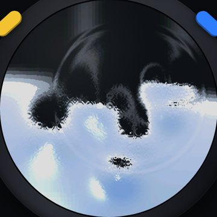
液体金属のような鏡面の膜。その下で「何か」が動き、呼吸し、鼓動します。構うほど速くなり、放っておくと落ち着きます。
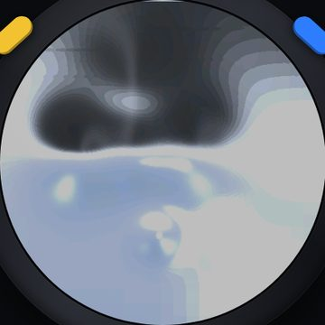
触るとぬるっと応える鏡面。指に吸いつき、なぞった跡はテカテカ残り、膜の下の生き物が腕を伸ばしてきます。離すと糸を引いて、ぷつっと切れます。
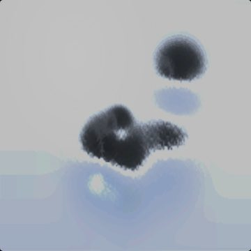
水あめのようにねっとりした膜。引っぱると伸び、離すとゆっくりたれて戻ります。四角い画面（CoreS3）版です。
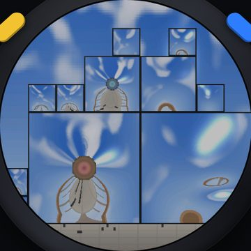
手のひらの鏡のパビリオン。立方体を積んだ建物の表面ぜんぶが鏡の膜で、空や雲、大屋根リングが映り込みます。
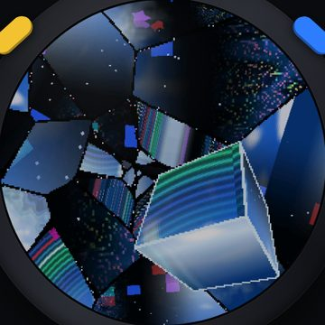
砕けた鏡の部屋がヌルヌル流れつづけます。かけらごとに別の景色がすべり、くしゃくしゃの箔がキラキラ光ります。
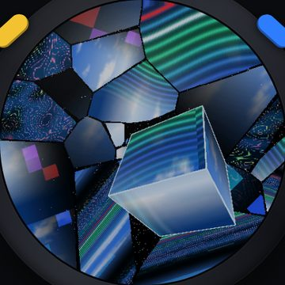
同じ部屋の高精細版。1ピクセルずつ計算するので、ひびは細く鋭く、光のすじもくっきり出ます。
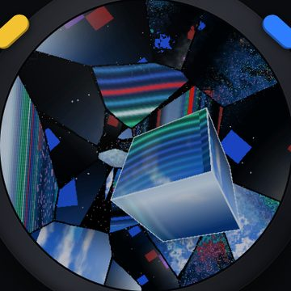
見える絵は高精細版のまま、実機で速く動くように中身を書き直した版。整数だけで計算し、差分で進めます。
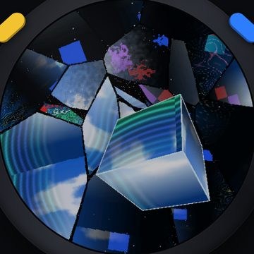
立方体と後ろのガラスが切り離され、立方体を動かしても後ろは流れません。描画もさらに詰めてあります。
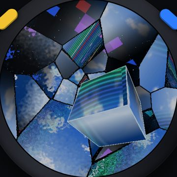
押し続けたときの渦が作り直され、指のまわりを本当に回します。押すほど、らせん状に巻き込まれていきます。
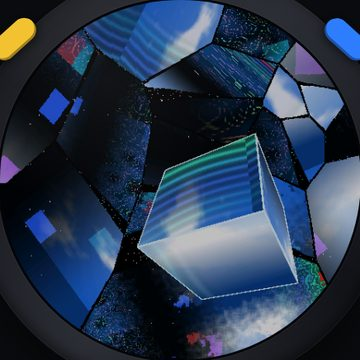
触りかたが渦から「割れ」に。タップでひびが走り、押し続けると広がり、待つとゆっくり元どおりにつながります。
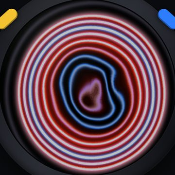
ラッパ形のくぼみの奥で光る LED リングと、うねる鏡の膜。赤と青のリングが重なり、内側の池に白熱した筋が流れ込みます。
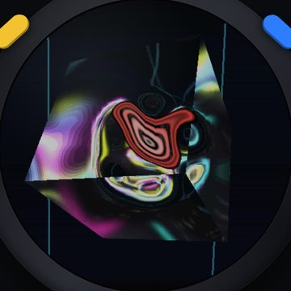
浮かぶ鏡の立方体と、その真ん中で光る眼。色は巡り、ときどきまばたきします。ボタンで朝・昼・夕方・夜が変わります。
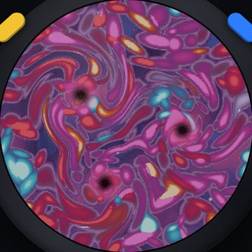
もやの上に浮かぶ塊を、いくつもの渦が引き伸ばしながら巻き込みます。押すといちばん近い渦がついてきて、強く吸い込みます。
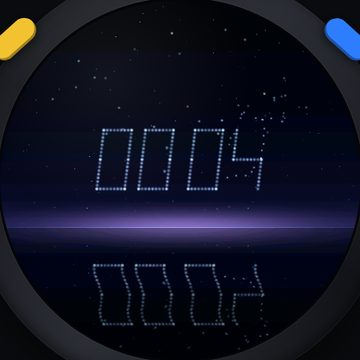
夜のヌルの森と鏡の床。真ん中のストップウォッチは、数字が変わるたびに光のかけらになってほどけ、空へ昇っていきます。